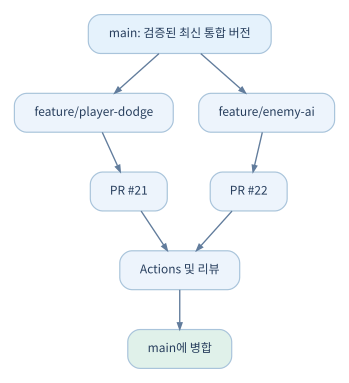

05. 브랜치, Pull Request, 코드 리뷰#
5.1 협업의 핵심: 작업을 분리하고 안전하게 합치기#
세 명이 같은 Unity 프로젝트를 개발하면 누구나 main의 파일을 직접 수정할 수 있는 구조가 간단해 보인다. 하지만 서로 다른 팀원이 같은 전투 시스템을 수정하거나, 한쪽의 에셋이 아직 준비되지 않은 상태에서 다른 기능을 병합하면 실행할 수 없는 게임이 되기 쉽다. 기능 브랜치에서 작업하고, Pull Request로 변경과 검증 결과를 확인한 뒤 병합하는 흐름을 추천한다.

main이 언제나 완전히 출시 가능한 버전이어야 한다는 뜻은 아니다. 소규모 팀에서는 현재 개발 기준으로 재현 가능한 실행·빌드 상태를 유지하는 목표부터 세우는 것이 현실적이다.
5.2 실무 브랜치 정책#
| 종류 | 이름 예 | 용도 |
|---|---|---|
| 기본 | main |
통합되고 검증된 소스 |
| 기능 | feature/player-dodge |
새로운 게임플레이 기능 |
| 수정 | fix/save-load-null |
재현된 버그 수정 |
| 실험 | experiment/new-camera |
실패 가능성이 큰 설계 탐색 |
| 릴리스 | release/0.2.0 |
필요한 경우 출시 후보 안정화 |
브랜치를 장기간 유지하면 Unity 씬/패키지 변경이 누적되어 병합 비용이 커진다. 작고 짧은 변경으로 나누고 통합 빈도를 높이는 편이 안정적이다. 단, 매일 무조건 병합할 필요는 없으며 동작하지 않는 중간 결과는 Draft PR로 공유할 수 있다.
브랜치 만드는 절차#
git switch main
git pull --ff-only origin main
git switch -c feature/player-dodge
# Unity에서 작업한 다음
git status
git add Assets/Scripts/Player/PlayerDodge.cs Assets/Scripts/Player/PlayerDodge.cs.meta
git commit -m "Implement player dodge"
git push -u origin feature/player-dodge
git pull --ff-only는 현재 브랜치가 Fast-forward만 가능한 경우에 업데이트한다. 브랜치 상태에 따라 실패할 수 있으며, 그때는 의도를 확인하고 별도로 병합·리베이스 방법을 선택한다.
5.3 Pull Request는 단순한 병합 버튼이 아니다#
PR은 '이 변경을 통합해 달라'는 요청이며, 변경 의도·코드 차이·관련 Issue·테스트 결과·리뷰 대화를 한곳에 연결하는 기록이다.
PR 구성 요소
- Base: 변경을 병합할 대상 브랜치 (
main등). - Compare/Head: 변경을 제출하는 브랜치.
- Title/Description: 무엇을, 왜 바꿨는지.
- Files changed: 코드/파일 차이 비교.
- Reviewers: 변경을 검토할 사람.
- Checks: Actions 등 자동 검사 결과.
- Merge: 승인된 변경을 기본 브랜치에 통합.
PR 설명 예시:
## 목적
플레이어의 회피 입력을 이동 상태 시스템에 통합한다.
## 관련 작업
Closes #42
## 변경 사항
- Dodge 상태 및 재사용 대기시간 추가
- 이동/공격 전환 조건 수정
- 기본 효과음 이벤트 연결
## 테스트
- [x] Edit Mode 테스트 통과
- [x] Play Mode 수동 확인
- [ ] 게임패드 조작 추가 확인 필요
## 영향 범위
PlayerMovement, PlayerStateMachine, CombatInput
GitHub에서 PR 본문의 Closes #42 같은 키워드를 사용하면 지정된 조건의 기본 브랜치 병합 시 관련 Issue가 자동 종료될 수 있다. 자동 종료 조건과 실제 게임 검증 조건은 구분한다. 플레이테스트가 끝나기 전에는 Refs #42처럼 단순 참조만 연결하는 운영도 가능하다.
5.4 Draft PR과 작은 변경의 장점#
코드가 아직 미완성이라면 Draft Pull Request로 올려 팀에 작업 의도와 예상 의존성을 공유한다. 완성 후 Ready for review로 변경한다. PR 하나에 수십 개 씬과 모든 전투 시스템이 섞이면 리뷰가 어려우므로 기능의 경계를 작게 잡는다.
리뷰어가 실제로 확인할 것#
- 요구사항: 연결된 Issue의 완료 조건이 충족되었는가?
- 설계: 기존 아키텍처·데이터 흐름·상태 소유권을 지키는가?
- 중복: 이미 있는 시스템과 기능이 중복되지 않는가?
- 안정성: 예외/널 참조, 저장·불러오기, 씬 전환에 문제가 없는가?
- 성능: Update에서 과도한 할당, 반복 탐색, 불필요한 Instantiate를 만들지 않는가?
- 에셋:
.meta, Prefab 참조, 프로젝트 설정, 라이선스에 예상치 못한 변경이 없는가? - 검증: 자동 검사와 실제 플레이 확인이 분리되어 기록되었는가?
- 유지보수: 설정 데이터·문서·테스트가 필요한 부분을 누락하지 않았는가?
AI가 작성한 PR도 동일한 기준으로 검토한다. 'AI가 생성했다'는 사실은 코드 정확성이나 프로젝트 일관성을 보증하지 않는다.
5.5 병합 전략#
| 방식 | 동작 | 소규모 팀에서의 선택 |
|---|---|---|
| Merge Commit | 분기 이력을 보존해 병합 커밋 생성 | 기능별 이력 추적에 유리 |
| Squash Merge | PR의 여러 커밋을 하나로 통합 | 자잘한 실험 커밋을 정리하기 편함 |
| Rebase Merge | 커밋을 재적용해 직선형 이력 구성 | 이력 관리 이해가 필요 |
어느 전략이 절대적으로 맞는 것은 아니다. 작은 팀이라면 Squash Merge 또는 일반 Merge 중 하나를 합의해서 일관되게 사용하는 것만으로도 충분하다. 팀원들이 공유 브랜치의 이력을 무작정 재작성하지 않도록 주의한다.
5.6 Rulesets와 브랜치 보호#
GitHub는 저장소 규칙을 통해 main에 직접 푸시하거나 검사 실패 상태의 병합을 제한할 수 있다. 관련 기능의 적용 범위는 저장소 공개 여부·조직·요금제에 따라 다르므로 실제 설정 페이지에서 지원 여부를 확인해야 한다.
처음 도입한다면 최소 정책으로 시작하자.
- 기본 브랜치에 PR을 통해 병합한다.
- 코드 책임자가 작성하지 않은 핵심 시스템 변경에는 다른 사람의 리뷰를 권장한다.
- 최소 테스트가 있을 때 Actions 검사 결과를 확인한다.
- 관리자가 긴급 수정할 수 있는 예외 절차를 문서화한다.
CODEOWNERS#
.github/CODEOWNERS 등에 다음처럼 파일 패턴별 코드 소유자를 지정할 수 있다.
/Assets/Scripts/Combat/ @YOUR_ORG/combat-team
/Assets/Scripts/Save/ @your-username
/ProjectSettings/ @your-username
예시는 실제 GitHub 사용자·팀으로 교체해야 한다. CODEOWNERS가 있다고 해서 모든 PR이 자동으로 승인 대기 상태가 되거나, 저장소 규칙 없이 승인 강제가 구현되는 것은 아니다.
5.7 Unity PR에서 특히 위험한 변경#
ProjectSettings/가 이유 없이 다수 변경됨.- 씬이나 프리팹에서 수백 개 항목이 수정되었는데 작성자가 이유를 설명하지 못함.
- Unity 버전 업그레이드와 게임 기능 변경이 하나의 PR로 섞임.
.meta가 삭제·재생성되어 GUID가 바뀜.- 임시 테스트 에셋·에디터 캐시가 커밋됨.
- 패키지를 추가했는데 라이선스와 버전 정책을 확인하지 않음.
- 테스트가 통과해도 Unity Editor에서 장면을 실행하면 오류 발생.
이런 경우에는 리뷰에서 '무엇을 위해 바뀌었는지' 확인하고 무관한 변경을 분리한다.
5.8 팀 실습#
세 작업을 Issues로 만든다: #10 이동 개선, #11 회피, #12 적 탐지. 각자 분기 브랜치를 만들고 PR을 제출한다. PR 설명에 관련 Issue와 테스트를 기록하고, 서로 리뷰한 뒤 main에 병합한다. 마지막으로 Unity에서 통합 빌드를 실행한다.
확인할 결과: PR 기록만 읽어도 변경 목적·검증 결과·최종 병합 여부를 추적할 수 있고, main에 안전하게 통합할 수 있다.
공식 자료: Pull Requests, Rulesets, CODEOWNERS
5.9 확장 실습: 팀원 두 명의 작업을 안전하게 통합하기#
이 절은 이미 알아본 브랜치·PR 개념을 실제로 완료 가능한 절차로 연결한다. 다른 사람의 계정이 없으면 개인 저장소에서 역할을 바꿔 진행해도 되지만, 실제 리뷰 알림·권한 테스트는 동료와 함께해야 확인할 수 있다.
사전 조건: 테스트 Unity 저장소를 GitHub에 올리고 main의 실행 가능 여부를 확인했다. git status는 깨끗하고, Unity 에디터는 같은 프로젝트를 동시에 두 프로세스에서 열지 않는다.
# 현재 상태 확인
git status
git switch main
git pull --ff-only origin main
# 새 기능 브랜치
git switch -c feature/31-player-dodge
# Unity에서 파일을 수정한 뒤
git status
git diff --stat
git add Assets/Game/Gameplay/Player
git commit -m "feat: add player dodge prototype"
git push -u origin feature/31-player-dodge
- 저장소의
Pull requests → New pull request를 연다. - Base를
main, Compare를feature/31-player-dodge로 선택한다. - 제목에는 사용자 눈높이의 결과를, 설명에는 '무엇을 바꿨는가, 무엇을 검증했는가, 어떤 위험이 있는가'를 작성한다.
- 관련 Issue 링크를 넣는다.
Closes #31같은 종료 키워드는 PR 병합 시 자동 종료되어도 좋은 Issue에만 사용한다. 플레이 QA까지 끝나야 닫는 Issue라면 자동 종료를 사용하지 않는다. - Reviewer를 지정하고 변경된 파일을 확인한다.
- 피드백이 오면 같은 브랜치에서 수정 후
push한다. PR은 보통 새 커밋을 자동 반영한다. - 승인과 자동 검사 상태를 확인한 뒤 팀의 병합 규칙에 따라 병합한다.
- 마지막으로
main을 갱신하고 Unity에서 실제로 열리는지 확인한다.
실패 사례: 에셋이 PR Diff에서 읽히지 않음. 코드와 달리 FBX·PSD 같은 바이너리 파일의 내부 변경은 GitHub가 의미 있게 보여주기 어렵다. 미리보기 이미지, 에셋 리스트, Unity 임포트 확인 결과를 PR에 첨부하고, 동시에 하나의 바이너리 파일을 수정하는 일을 최소화한다.
5.10 Rulesets 실제 설정 순서#
- 저장소
Settings → Rules → Rulesets로 들어간다. 권한/요금제/조직 정책에 따라 보이는 메뉴가 다를 수 있다. - 새 Branch ruleset을 만든다. 이름은
protect-main처럼 의미 있게 작성한다. - Target branch로 기본 브랜치
main을 지정한다. - 처음에는
Require a pull request before merging정도만 검토한다. 필요하면 승인 수와 기타 옵션을 설정한다. - 안정적인 자동 검사 Workflow가 있다면
Require status checks to pass를 검토한다. 아직 실행된 적 없는 체크 이름을 임의로 필수 조건으로 정하면 병합이 막힐 수 있다. - 시행 모드가
Active인 경우 즉시 영향을 미친다. 테스트 브랜치로 실제로 작동하는지 확인한다. - 팀원에게 우회 권한이 있는지, 긴급 수정 절차는 무엇인지 문서화한다.
중요: 개인 Free 계정의 비공개 저장소 등에서는 특정 Ruleset 및 리뷰 필수 기능이 제한될 수 있다. UI가 보이지 않는다면 팀의 실수를 원인으로 가정하지 말고 Rulesets 공식 문서와 계정 플랜을 확인한다.
5.11 리뷰할 때의 우선순위#
모든 PR에서 모든 코드를 정밀하게 검사할 필요는 없다. 게임 프로젝트에서 위험이 큰 변경부터 깊게 본다.
| 위험도 | 변경 유형 | 우선적으로 확인할 것 |
|---|---|---|
| 매우 높음 | 세이브 구조·게임 진행 상태·외부 인증 | 데이터 손상·호환성·복구 경로 |
| 높음 | 공통 시스템 API·입력·전투 규칙 | 기존 사용처, 테스트·플레이 동작 |
| 중간 | 신규 적·무기·UI 기능 | 기존 규칙 재사용 여부와 장면 통합 |
| 낮음 | 독립 에셋·문구·경미한 서식 | 참조 깨짐과 기본 동작 |
AI가 만든 코드는 코드량보다 변경 의도와 검증 증거로 평가한다. 리뷰어는 '무엇을 삭제/추가했는가'뿐 아니라 '왜 기존 클래스를 그대로 활용하지 않았는가'를 질문해야 한다.
PR에서 기본적으로 확인할 다섯 질문#
- 요구사항 Issue의 완료 기준을 충족했는가?
- 기존 로직이 중복되거나 핵심 책임이 두 곳으로 갈라지지 않았는가?
- 관련 Unity 씬/Prefab/Meta 참조에 문제가 없는가?
- 코드 검사와 실제 게임 검증을 구분해서 기록했는가?
- 되돌리기 어려운 변경이라면 백업·마이그레이션·복구 계획이 있는가?
확인할 결과: main에 코드를 합치는 방법뿐 아니라 '어떤 변경은 자동화로 검사할 수 있고 어떤 변경은 실제 플레이해야 하는지'를 설명할 수 있다.